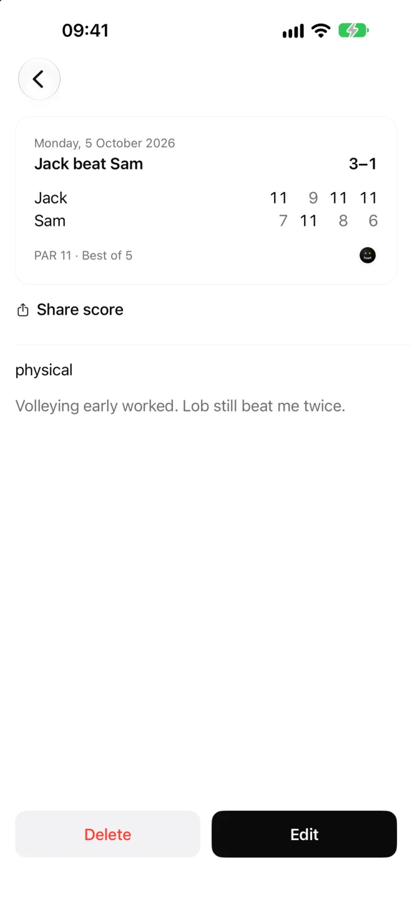

Support
Log a match
Tap Log match, pick who you played, then type the scores. The cursor moves on by itself once a score is complete. Tap Next for scores like 11–1. Games after the match is decided are saved as extra games and don't count towards the result.


Move to a new phone
In Settings, tap Export backup and save the file somewhere you can reach from the new phone. On the new phone, tap Settings → Import and choose the file. Importing a backup replaces everything on that phone, and boast asks before it does.
Send your history to a friend
On an opponent's page, tap Share history. Your friend opens the file with Settings → Import in their copy of boast. Scores are flipped to their side, and matches they've already logged are skipped. Notes and game plans are never included.
Delete or rename an opponent
Open the opponent and scroll to the bottom. Renaming updates every match against them. Deleting asks first, and also deletes your matches against them.
Before a match
Open the opponent to read your game plan and your record against them. Tap Add tactic to add a line, and press and hold a tactic to edit or delete it.

Light and dark
boast is light by default. Change it in Settings → Appearance.
Still stuck?
Email boast-support@pm.me. Include your phone model and what you tapped.